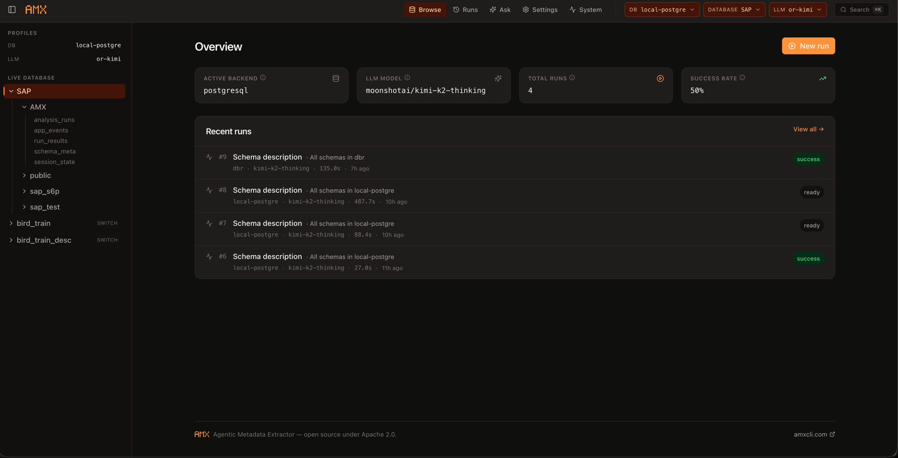

/studio — local AMX web UI (AMX Studio)¶
/studio boots AMX Studio on 127.0.0.1:<port>, generates a one-shot
bearer token, and opens your default browser at the token-protected URL. It's the
same review-and-apply workflow you get in the REPL — runs, results, the pending
queue, the /ask chat, and full DB / LLM / Docs / Code profile management — but
on a denser surface where you can see everything at once.
The CLI command is amx /studio (slash form, used inside the AMX REPL) and
amx studio (Click subcommand, used from a fresh shell). Both run the same
amx.web.launch_studio entry point.

Prerequisites¶
- AMX installed (
pip install amx-cli). AMX Studio ships inside theamx-cliwheel — there is no separate package to install and no Node toolchain required. - A modern browser (Chrome, Firefox, Safari, or Edge).
- An active DB and LLM profile, or a clean install ready for the in-browser
/setupwizard.
Quick start¶
Or as a top-level shell command:
The default port is 47821. Pass --port <n> to pin a specific port, or
--no-open to skip the auto-launch when running over SSH.
The launcher prints the token-protected URL — copy it into a browser on the same
machine if --no-open was used, or use a tunneling tool to reach it from a
laptop while the server runs on a remote box.
What's in the UI¶
| Page | What it does | Backed by |
|---|---|---|
Overview / |
Stat cards (active backend, LLM model, total runs, success rate) + Recent runs feed. Tile and row click-throughs jump to Settings or the run detail. | /api/history/stats, /api/history/runs |
Browse /db/:profile/:database/:schema/:table (2-level) and /cat/:profile/:catalog/:schema/:table (3-level) |
Multi-profile asset tree: every saved DB profile is its own expandable row in the sidebar. Walk profile → database/catalog → schema → table; inline-edit any comment or hit Generate for one-asset-at-a-time LLM drafting through the same review loop the CLI uses. Two browser tabs on different profiles never collide. | /api/live/..., /api/comments/..., /api/generate/... |
Runs /runs |
Every /run and /run-apply invocation, filterable by status (Succeeded / Failed / Running / Cancelled) and sortable by Started. Compare 2–4 runs side-by-side via the Compare button. |
/api/history/runs, /api/history/compare |
Run detail /runs/:id |
Live SSE progress while a run streams (sticky banner with elapsed timer + current activity + N/total processed), then a tabbed Summary / Results / Scope / Settings view once the run finishes. Per-row alternatives carousel + skip + custom-edit + restore. | /api/history/runs/{id}, /api/pending/... |
Ask /ask |
Streaming chat with the AMX search agent — reasoning + tool calls + grounded answer, with a sessions sidebar, end-session control, and a multi-profile scope dropdown above the textarea (sticky per chat). Each turn shows an answer footer with profile count, latency, and the auto-detected focus profile. | /api/ask (SSE), /api/ask/sessions/... |
Pending /pending |
The review queue waiting for /apply. Inline-edit any row, drop or skip individual entries, or Preview SQL before writing. (See Preview SQL below.) |
/api/pending/... |
Audit /audit |
Newest-first timeline of every COMMENT successfully written by /apply. Filter by run id or DB profile; each row shows who applied it, on which host, and what the prior text was so you can spot accidental overrides. (See Audit page below.) |
/api/history/apply-events |
Settings /settings |
Tabbed profile management for DB / LLM / Docs / Code — list, activate, edit, delete, plus the full per-backend wizards (PostgreSQL, Snowflake, Databricks, BigQuery, MySQL, Oracle, SQL Server, Redshift, ClickHouse, DuckDB) and per-provider LLM wizards. Same fields as /add-db-profile / /add-llm-profile / /add-doc-profile / /add-code-profile. |
/api/profiles/... |
System /system |
Doctor checks (re-run, skip-network toggle), per-(provider, model) token usage + cost over today / 24h / 7d / 30d / all, search-catalog status, team history-store enable / disable, and one-click placeholder cleanup. | /api/doctor, /api/usage, /api/catalog/status, /api/admin/... |
The top bar surfaces the active LLM profile as a click-to-switch dropdown
pill plus a ⌘K / Ctrl-K command palette for jumping to any page or quick
action. (DB profiles are no longer "active vs. inactive" — every saved profile
shows up as its own expandable row in the sidebar so you can browse all of
them simultaneously.)
Multi-profile browse¶
The Browse sidebar lists every saved DB profile as its own expandable top-level row — no "active" / "switch" concept. Click any profile to lazy-load its catalogs / databases; expand a database/catalog to see its schemas; expand a schema to see its assets. The sidebar uses indent + typography to keep the hierarchy scannable when several profiles are open at once: profile rows are uppercase + bold, database/catalog rows are normal weight, schemas are dimmer small-caps, tables are the dimmest at the bottom.
DB PROFILES
─────────────────────────────────
▾ LOCAL-PG ← profile (uppercase, bold)
▾ appdb ← database (normal weight)
▾ public ← schema (12px, dim)
users ← table (11px, dimmer)
orders
▸ analytics
▸ reporting
▸ SNOWFLAKE-PROD
▸ DATABRICKS-STG
Per-tab scope. URLs encode the full scope — /db/:profile/:database/...
for 2-level backends (Postgres, MySQL, …) and /cat/:profile/:catalog/...
for 3-level (Databricks Unity Catalog, BigQuery). Two browser tabs on
different profiles never bleed state into each other; an inline comment
edited on profile X writes to profile X's backend, regardless of what
some other tab is viewing.
Per-row Gen still works. Inline-edit and the per-asset / per-row "Generate description" buttons on Database / Schema / Table pages all carry the page's profile through to the backend, so multi-profile users can draft one comment at a time across any number of profiles without a profile switch in between.
Chat scope and focus¶
The Ask page (/ask) inherits the multi-profile model. Above the question
textarea: a scope dropdown with multi-select checkboxes. Default is "All
profiles" (every saved DB profile in scope); select individual profiles to
narrow /ask's retrieval to just those. The selection is sticky per chat
session — picks persist within the chat and reset only when you start a
new chat with + New.
Scope: [▾ All profiles (5) ] [● Ask]
─────────────────────────
☑ All profiles
─────────────────────────
☐ SAP
☐ WAREHOUSE
☐ ANALYTICS
☐ RAW
☐ REPORTING
─────────────────────────
Focus: WAREHOUSE (auto)
The Focus line at the bottom of the dropdown surfaces an auto-detected conversation focus — when ≥60% of profile mentions in the last 3 assistant turns point at one profile, the system prompt nudges the model to default to it for ambiguous questions. The user can still ask explicit cross-profile questions ("compare across all profiles", "is this in any other profile") and the model switches context smoothly.
Each assistant turn carries a small footer below the answer:
— the scope used, wall-clock latency, and (when applicable) the auto-detected focus, so users can spot a slow profile or a misaligned focus at a glance. Per-tool latency is also recorded internally for debugging.
CLI parity: the same sticky-scope / focus / latency machinery powers
/ask in the REPL — see Ask & Search
for the matching /use-db / --db-profile / /session scope flows.
Generate descriptions from any page¶
Bulk runs (the canonical /run path) stay the right tool when you want to fill
in many assets at once. The Browse pages add a one-asset-at-a-time path for the
times you want to fix or draft a single comment without spinning up a full run:
- Database page → "Generate description" button writes the database / catalog comment directly.
- Schema page → "Just this schema" (single LLM call) vs "All tables" (full bulk run, redirects to the live run-detail stream).
- Table page → "Just this table" vs "All columns".
- Column rows → per-row "Gen" button writes that one column's
COMMENTin place.
Every generated suggestion still goes through the human-in-the-loop review queue — nothing lands in the live database until you accept it.
Preview SQL¶
The Pending page (/pending) ships with a Preview SQL button
next to Apply. Clicking it runs the same dry-run path as
amx /analyze apply --dry-run
and pops a modal listing the exact COMMENT ON … statement each
queued row would execute:
public.transactions.posting
COMMENT ON COLUMN public.transactions.posting IS :cmt
public.transactions.amount
COMMENT ON COLUMN public.transactions.amount IS :cmt
public.transactions
(skipped — backend cannot accept this asset kind)
Skipped rows (asset kinds the backend can't accept, e.g. schema comments on ClickHouse) are listed separately so you know which entries are no-ops before pressing Apply.
The pending file is left untouched; the modal is read-only. Close it and click Apply to write for real, or edit / drop rows and re-preview.
Audit page¶
/audit is the timeline view of every COMMENT AMX has successfully
written, newest-first. Each row shows:
- the asset path (
schema.table.column), - the new comment AMX wrote,
- the prior comment that was overwritten — strikethrough if the asset already had one (so accidental overrides surface immediately),
- attribution: profile, run id, who applied it (
getpass.getuser()on the CLI host), and the hostname.
Two filters at the top:
- Run id —
42shows only what run #42 wrote (matches the filter that/history rollback 42uses). - DB profile —
prod_pgscopes the timeline to that profile so team members on a shared history store see only their domain.
The page polls /api/history/apply-events every 30 s plus on
window focus, so a CLI /apply somewhere else is reflected without
a manual refresh.
old_comment strikethroughs make it easy to spot the case the
audit was designed for: an LLM rewrite landed on top of a DBA's
hand-written domain note. Click through to
/history rollback when you want to undo
the overwrite.
Cancelling long-running jobs¶
/run and /apply jobs run in daemon threads inside the parent CLI process.
Each carries a threading.Event cancel token plumbed through the orchestrator;
clicking Cancel on the progress card sets the token and the loop bails
between rows.
/apply cancellation commits whatever was already written — matching the
CLI's Ctrl-C behaviour. The transaction boundary is per-row, so
partial work is never rolled back to spare you a multi-minute redo.
In-flight LLM HTTP calls cannot be killed mid-flight (provider SDKs don't expose cancellation), so cancellation latency is "one tool/agent step" — typically a few seconds.
Security model¶
AMX Studio binds only to 127.0.0.1 — never 0.0.0.0. On top of
loopback isolation, every API call carries a one-shot bearer token generated
fresh per /studio invocation. The SPA captures the token from ?t=… on
first load, stashes it in localStorage (key amx.studio.token), and strips
it from the URL bar so it doesn't end up in browser history.
EventSource clients (the SSE streams behind /ask, /run, and /apply)
re-attach the token via ?t=… because browsers don't allow custom headers on
EventSource.
You can rotate the token by stopping the server (Ctrl-C) and
re-running amx /studio.
What's not exposed¶
- The JSON API does not include
/docsor/redoc. The OpenAPI surface stays internal so AMX Studio doesn't accidentally expose your AMX configuration to anyone who happened to grab the token. - Static asset routes (
/,/assets/*) are unauthenticated by design — they only ship the SPA bundle, not data. - Secret fields (
password,access_token,api_key) are masked as********in every response. PUT bodies treat the placeholder as "leave the existing value alone" so editing one field on a profile doesn't blank the secret.
Troubleshooting¶
Browser opens to a 404 / "Connection refused"¶
The server may have failed to bind (port 47821 busy and the ephemeral fallback
also fell over). Pass --port to force a different port:
"AMX Studio auth is not configured" on every request¶
The token cookie / localStorage entry was wiped or never captured on this
browser. Re-launch amx /studio and let the launcher re-open the browser
with a fresh ?t=… URL.
/ask returns "Search catalog isn't initialised yet"¶
Run /sync (or /run once) to populate the SQLite-backed catalog. AMX Studio
reuses the same store the CLI's /ask uses, so a sync from either side
surfaces immediately.
Pending queue is empty but I just approved rows¶
AMX Studio reads ~/.amx/pending_metadata.json. If you're on shared-mode
history, the queue is still local-only by design (write-back is per-machine).
Connection-test on a Databricks profile fails with a TLS error¶
AMX Studio reuses DatabaseConnector.test_connection_result(), so the same
TLS setup as the CLI applies. Set tls_no_verify=true (or pin a
tls_trusted_ca_file) on the profile from Settings, then click Test again.
What's next¶
/runand/apply— same workflow, REPL-flavoured./askand/search— the conversational surface that AMX Studio's Ask tab wraps.- Human-in-the-loop review — what the Pending queue actually does and why every Generate goes through it.